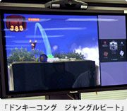
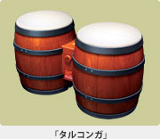

2003年７月。京都から立ち上げスタッフが東京へ乗り込み、立地調査や通勤、業務形態までのあらゆる準備を各部署と相談しながら進め、第１作目となる『ドンキーコング ジャングルビート』の開発と共に、ついに東京制作部の活動がスタートしました。『ドンキーコング ジャングルビート』は、すでに市場に出て好評を得ている『ドンキーコンガ』で使用する"タルコンガ"を使ったアクションゲームで、今冬に発売予定。2004年５月にアメリカでおこなわれたＥ３（ビデオゲーム等の展示会）ではたいへん評判がよく、"Best Original Game"という賞をもらったほどの期待作です。
東京制作部が設立されてから、ちょうど１年が経とうとしているいま、現在は京都からの設立スタッフと共に、新規加入メンバーが「任天堂」という一つのチームとして"新しい遊び"を作り続けています。そして今後さらに大きな飛躍をするため、東京制作部では未知の人材を求めて両手を大きく拡げて新しい可能性を待っているのです。もしかしたら、大好きだった"あのゲーム"を作った人と、新しいなにかを作り出せるチャンスかもしれませんよ！
|